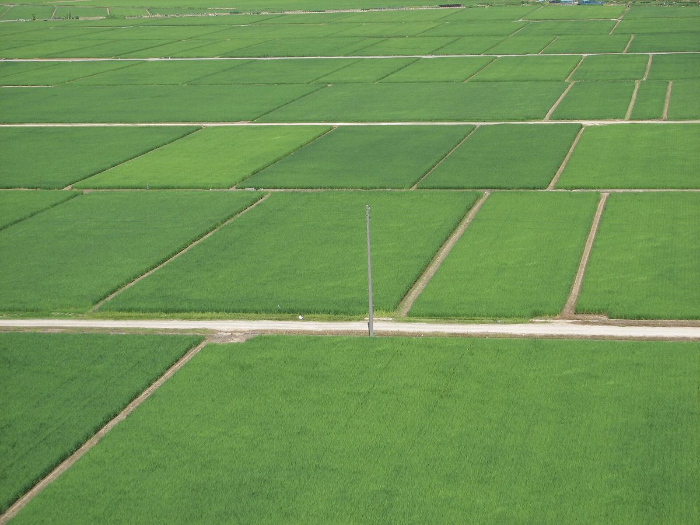

工房あめのちはれ


営業のご案内
| 営業時間 | 準備中(お問い合わせください) |
|---|---|
| 定休日 | 準備中(お問い合わせください) |
| ご予約 | 準備中(お問い合わせください) |
内容が分かり次第、こちらに掲載します。


| 営業時間 | 準備中(お問い合わせください) |
|---|---|
| 定休日 | 準備中(お問い合わせください) |
| ご予約 | 準備中(お問い合わせください) |
内容が分かり次第、こちらに掲載します。
掲載している写真はフリー素材のイメージで、工房あめのちはれの実際の店舗・商品・周辺の様子ではありません。他の地域で撮影されたものや、撮影地が不明なものを含みます。